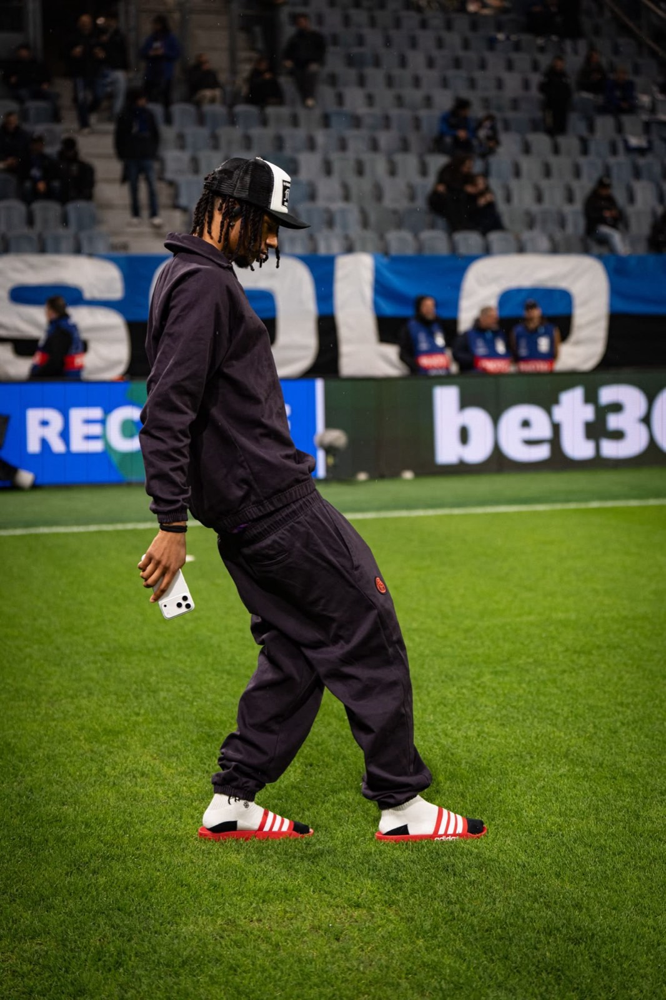

photography PRESS & PAPARAZZI ARCHIVE, 2008–2013
section RIGHT NOW — 時下
There is a photograph of Mario Balotelli walking through Manchester in a champagne-beige nylon jacket, toothpick in mouth, chain swinging from his cargo pants, completely unaware — or completely aware — that a man with a camera is trailing him like a moon. It is not an outfit anyone would advise. That is exactly why it works. Nobody advised it.
Football fashion in 2025 is a supply chain. A player walks from the team bus to the dressing room and the tunnel becomes a runway: stylist-approved, brand-tagged, posted before kickoff. It is beautiful and it is dead. Between roughly 2008 and 2013 — the Balotelli years — the tunnel was not a runway. It was a psychiatric evaluation.

He arrived at Inter as a teenager with a mohawk and the face of someone who had already decided not to explain himself. The earphones were wired. The sunglasses were enormous. The polo was club-issued and he wore it like couture, which is to say: with total indifference. José Mourinho called him unmanageable. The cameras called him constantly.

What made Balotelli's style radical was not the clothes. It was the refusal of the concept of appropriateness. A club suit, worn correctly — with a skull-print beanie and fuchsia Beats clamped over it. Airport-lounge whites accessorized with pink headphones the size of dinner plates. A flat cap, a sky-blue training polo, and a Louis Vuitton toiletry case carried like a football under one arm. Every look answers the same question: what if you simply did not care about the difference between contexts?

The famous shirt said WHY ALWAYS ME? — but the clothes had been asking the question for years.
The mythology is inseparable from the wardrobe. The fireworks set off in his own bathroom the night before the Manchester derby. The camouflage Bentley, which defeats the purpose of both camouflage and Bentley. Driving into a women's prison "to have a look." Handing out cash outside a casino. Struggling, live on television, with a training bib — a garment with one hole — while a stadium watched. Then scoring against United the next day and lifting his shirt: WHY ALWAYS ME? Deadpan. Unsmiling. The most quotable garment of the decade.

It would be easy to file all this under chaos. But look again at the photographs. The proportions are consistently ahead of their time — the wide trouser, the shrunken polo, the tonal beige-on-beige, the deliberate collision of luxury object and sportswear. Half of what menswear editors celebrated in 2023 was on Balotelli's body in 2010, photographed outside a Manchester taxi rank, captioned as a meltdown.

The lineage is visible every week now. A winger crosses a rain-soaked pitch in socks and slides, phone in hand, tracksuit tucked exactly wrong — and it is styled, approved, sponsored. The gesture survives; the risk is gone. Balotelli's clothes were never content. They were symptoms — of boredom, of genius, of a twenty-year-old with infinite money and no interest whatsoever in being understood.

Fashion keeps trying to manufacture what he had. It cannot, because what he had was not taste. It was sovereignty — the complete absence of an audience in his head. Why always him? Because he was the only one not performing.